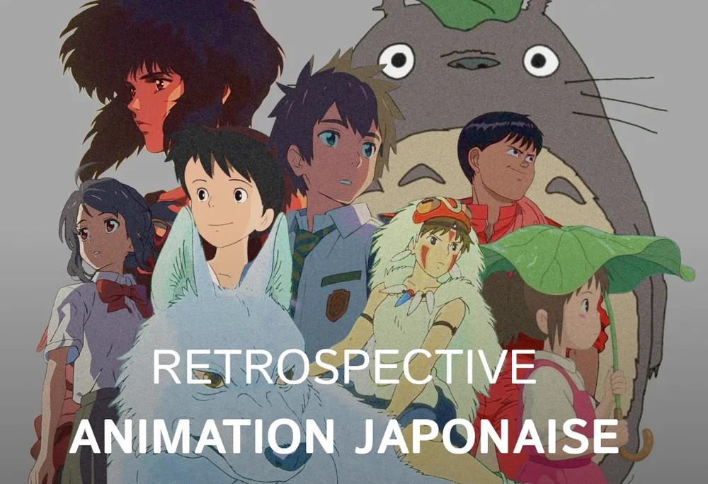
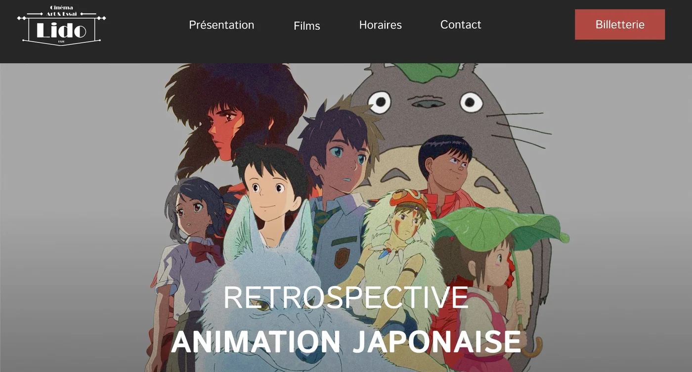
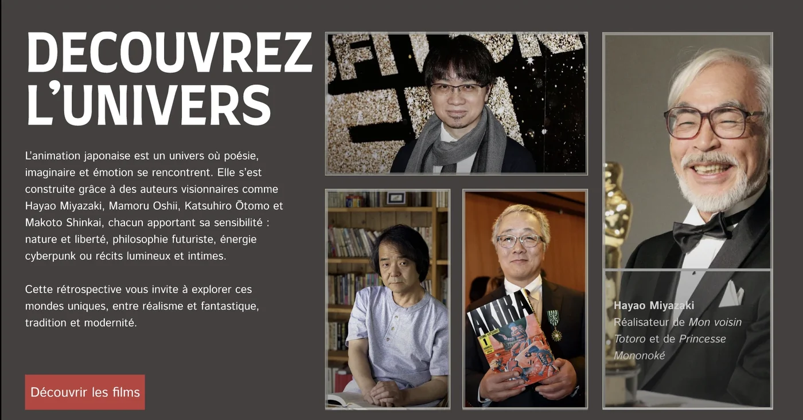
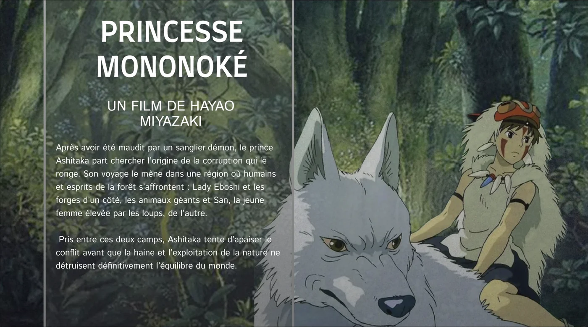
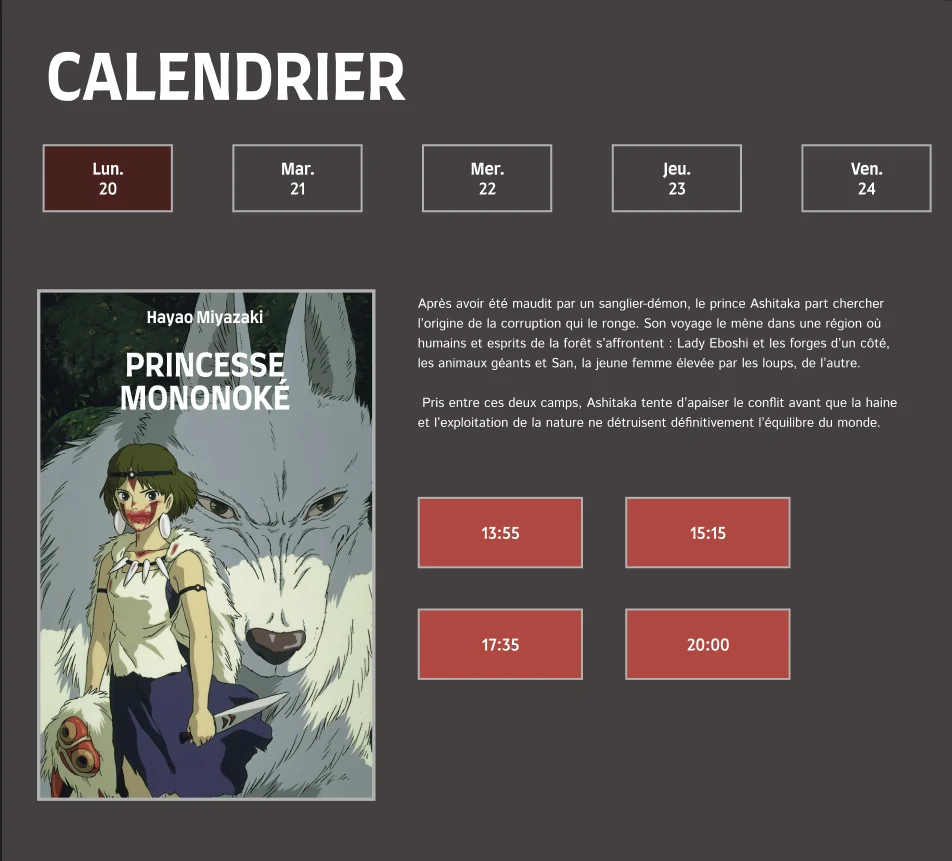

Universitaire
le lido
La landing page de la rétrospective animation japonaise du cinéma Le Lido, à Limoges : une page pour plonger dans l'univers des films et réserver sa séance.
Projet étudiant, sans lien officiel avec le cinéma. Les films et les photos appartiennent à leurs auteurs.
le brief
Le Lido, cinéma de Limoges, organise cinq semaines de rétrospectives autour de films cultes : animation japonaise, David Lynch, sport, science-fiction et comédies musicales. Pour chacune, il veut une landing page qui plonge le visiteur dans l'ambiance de la thématique et lui donne toutes les infos pratiques pour venir et réserver.
J'ai choisi l'animation japonaise. La page devait réunir cinq sections (en-tête immersif, présentation de l'univers, sélection des films, calendrier des projections, localisation) et renvoyer vers la billetterie du cinéma, sans paiement sur la page. Le projet suivait les étapes d'un vrai projet : recherche et moodboards, wireframes, puis maquette prototypée.

la direction artistique
Le brief laissait la charte libre : la page n'avait pas à reprendre l'identité du cinéma, seulement à faire entrer dans l'univers de la rétrospective.
Un fond anthracite et une barre de navigation presque noire, des titres en capitales blanches très grasses, des images cernées d'un filet gris clair et un rouge brique réservé aux actions : billetterie, séances, découverte des films.
- anthracite
- noir
- brique
- bordeaux
- blanc
la page
Les écrans dans l'ordre du scroll, de l'en-tête au calendrier des séances.



